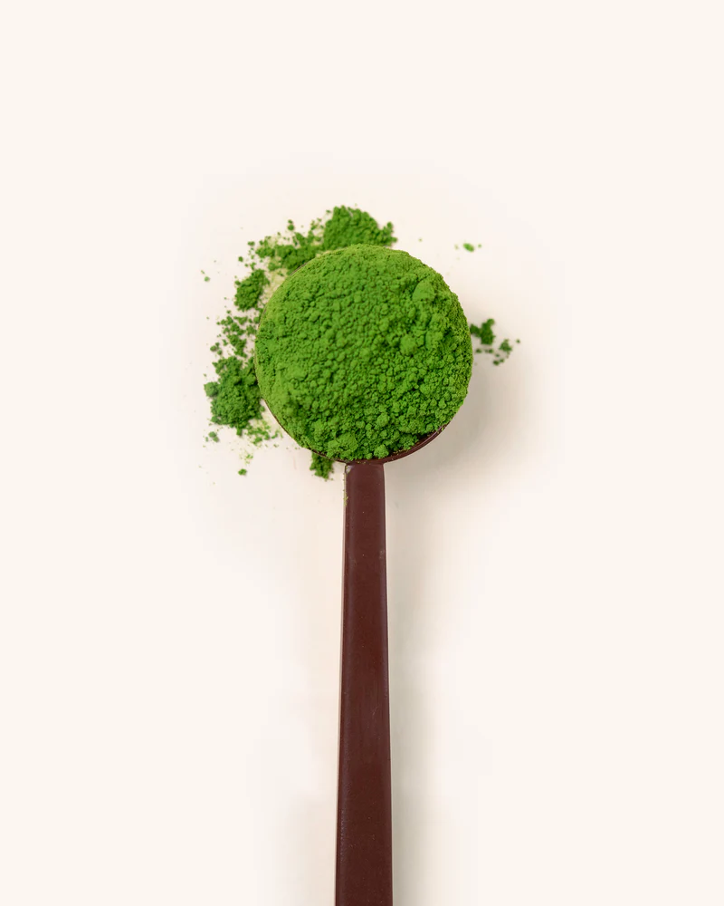
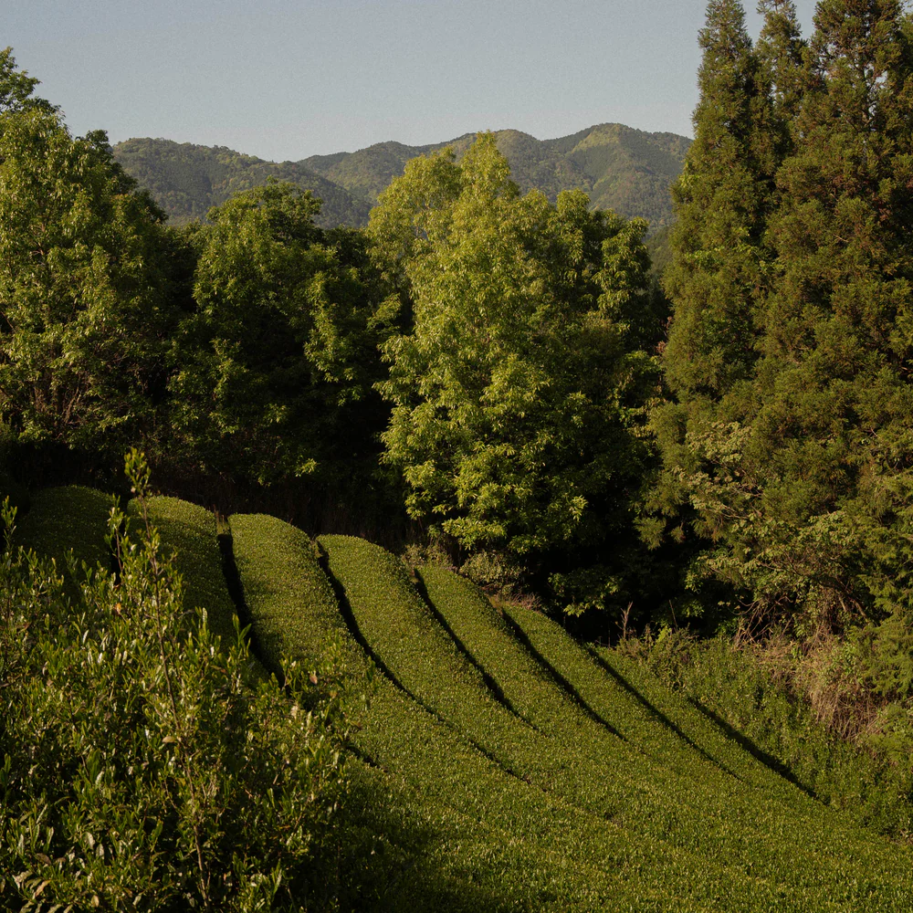
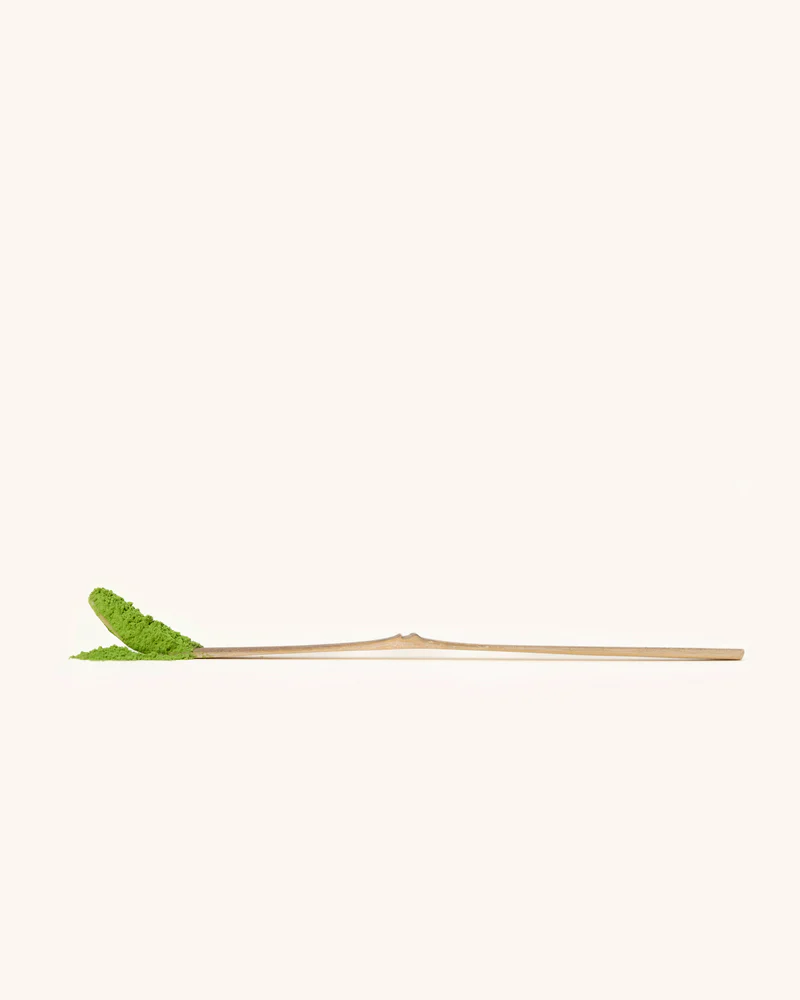

★ 5.00 11 Reviews
Ceremonial Matcha 30 grams
€28,95
A starter size for anyone new to matcha or trying ceremonial grade for the first time. The smaller bag is also practical for travel or testing whether matcha fits into your routine.
Our matcha is first-flush harvested in Kagoshima, stone-ground fresh, and lab-tested in Europe for purity.
Contains approximately 15 servings, enough to develop a sense of whether this is something you'll enjoy regularly.
Now with free shipping for all customers in the Netherlands, Belgium and Germany.
Bundle deal
Lab tested in Europe
Our matcha and hojicha have been thoroughly tested by an independent, accredited laboratory. The results confirm they are:
- No pesticides (chemicals farmers sometimes use)
- No heavy metals (harmful substances that can be in soil)
- Perfect microbiological quality (no bad bacteria or germs)
- Meets Europe's strictest safety rules
Think of it like a report card for safety - we passed every test.
Premium ceremonial quality
We use only the youngest, most tender tea leaves, the best part of the plant. Then we grind them super slowly using traditional stone mills (not fast machines that heat things up). This keeps the flavor smooth and sweet, just like they've made it in Japan for hundreds of years.
Vibrant green color
Our matcha is bright, electric green, and here's why that matters: we grind it fresh and seal it right away so the color stays locked in. If matcha looks dull or brownish, it's old and has lost its power. Ours looks like this because it's fresh.
Complete your set:

Why people love matcha
Matcha isn't just tea, it's a daily ritual that helps you feel energized, focused, and balanced throughout your day.
♡ Smooth energy that lasts
Unlike coffee that makes you jittery then crashes, matcha gives you calm, steady energy for 4-6 hours. You feel awake and alert without the shakes.
♡ Calm focus
Matcha contains L-theanine, a natural ingredient that helps you concentrate while staying relaxed. It's like being in "the zone", focused but not stressed.
♡ Packed with antioxidants
Matcha is loaded with catechins (powerful antioxidants) that protect your cells from damage and support your immune system. Think of them as tiny bodyguards for your health.
♡ Better than coffee for your body
No stomach aches, no afternoon crash, and no sleep problems. Matcha is gentle on your system while still waking you up.
How to prepare your matcha
Making matcha is a simple 3-minute ritual, a calming break in your day that creates a perfectly smooth, frothy cup.
Start with a small amount of water
Add one scoop of Yoisho Matcha to your bowl with just a few splashes of hot water (not boiling, keep it under 80°C to protect the flavor).
Whisk until a smooth paste
Whisk quickly in a zigzag motion until all the powder dissolves into a thick, lump-free paste. This is the secret to silky matcha.
Add water & whisk
Pour in 40ml more hot water and whisk vigorously in a zigzag until you see a layer of small bubbles on top. Keep whisking until it's nice and smooth.
Create your own favorite
Drink it as is for the authentic experience, or add your favorite (plant-based) milk to make a matcha latte. Make it the way you like it.
Related products
-

Bamboo Spoon€5,95
-
BUY 2 + 1 FREE CEREMONIAL GRADE

ceremonial Matcha 100 grams€69,95
-
Bamboo whisk€16.95
-
BUY 2 + 1 FREE Lab tested

Ceremonial Matcha 50 grams€39,95
Frequently asked questions
Use the FAQ section to answer your customers' most frequent questions.
How long will it take to receive my order?
For orders in the Netherlands and Belgium placed before 22:00, we offer next-day delivery. For other European countries, shipping typically takes 3–5 business days.
What is your return policy if I'm not satisfied?
If you’re not fully satisfied, you can return unopened matcha within 30 days of delivery for a full refund — no questions asked. Simply contact our support team to get started.
Where is your matcha sourced from?
Our ceremonial-grade matcha is harvested in Japan’s renowned tea regions, where it’s shade-grown, hand-picked, and stone-ground to preserve its vibrant color and smooth, delicate flavor.
How should I store my matcha to keep it fresh?
Keep your matcha in an airtight container in a cool, dark place, ideally refrigerated after opening - to maintain its bright green color and fresh taste
Is your matcha tested for safety and purity?
Yes, every batch is independently lab tested in Europe to ensure it’s free from pesticides, heavy metals, and other contaminants, meeting the highest quality standards.